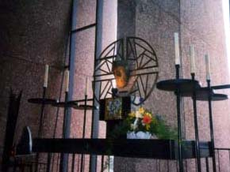
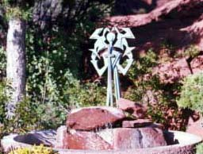
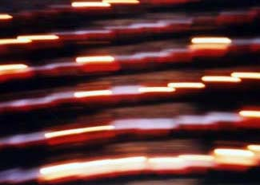

セドナ日記 〜 第３日目 98.5.6
再び教会へ I
 ベルロックの次はカシドラルロックへ。忙しいといえば忙しいのだけれど、そんなに慌ただしい感じはしない。もしかしたら、時間が伸びていたのかも知れない。そして、ゆっくりと流れていたのかもしれない。ちょっとだけ、教会に寄り道する。前回（初日）に来たときは時間がおそくて礼拝堂は閉まっていたが、この日はあいていた。
 赤い岩の上に立つ、コンクリート建築。一目見ると、そのコンクリートが無機質的で冷たい感じがしたが、すぐに、その素材が発している柔らかい、暖かさを感じることができた。とにかく神聖な雰囲気がすごかった。礼拝堂の中にはいると、その空気もちょっと変る。自分の声がとても、響き渡るようになる。
赤い岩の上に立つ、コンクリート建築。一目見ると、そのコンクリートが無機質的で冷たい感じがしたが、すぐに、その素材が発している柔らかい、暖かさを感じることができた。とにかく神聖な雰囲気がすごかった。礼拝堂の中にはいると、その空気もちょっと変る。自分の声がとても、響き渡るようになる。
僕はクリスチャンではない。仏教は葬式と墓参り、神道は初詣、でもクリスマスはそれなりに楽しいから、そういう意味ではクリスチャンかも知れない。まあ、いろんな考え方があるが、宗教的なものにはどうも相容れない。組織化されているものが、ちょっと苦手なのだ。
しかし、この教会の雰囲気には、心が打たれた。静けさのなかに漂う、なにか懐かしい記憶のようなもの。そんなものを感じることで、妙に安心し、心が開くような感じがした。
ローソクに火を灯す。世界の中心で何かの作動装置に点火した気分になった。
地下は、お店になっていているが、この日はちょっとのぞくだけにして、カシドラルロックへ急ぐことにした。教会へはもう少し時間をとって、出直すことにした。